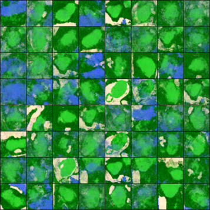
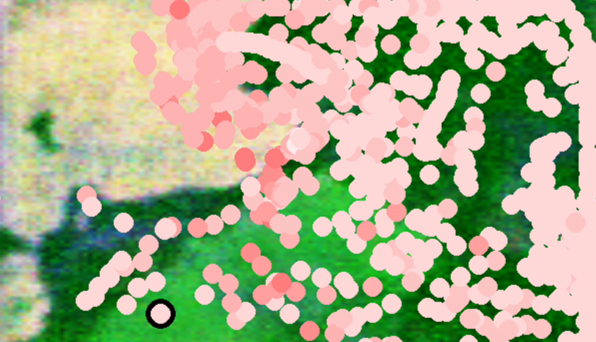

Teaching AI to play golf on a course that’s also AI generated
Both the CGAN and Q Learning models required intense training, which took tons of time, and careful calculations to prevent pointless training. Q Learning model training also took a lot of resources, including using up to 2000 instances of the models at once.

